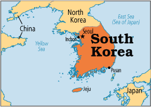
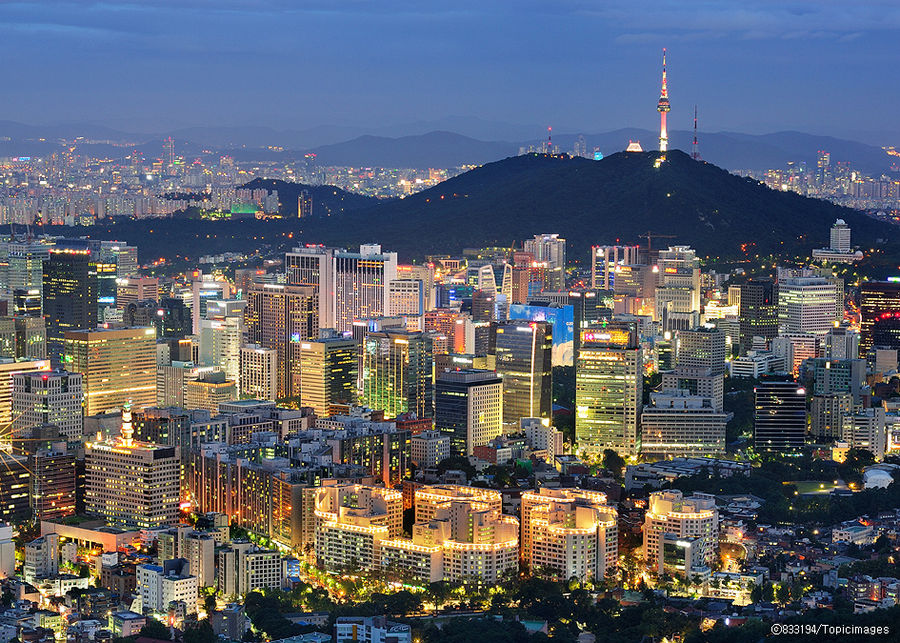
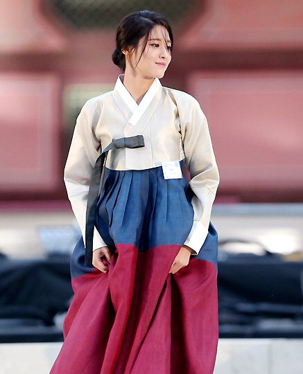
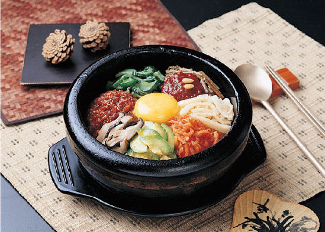
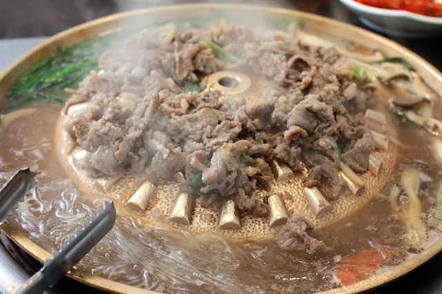

  First, I’m going to explain my country and city. I'm from Seoul, South Korea. South Korea has many big beautiful cities despite its small territory. And it has special its own culture.
   First one is Han bok that is very big so it's good to wear and the color is very beautiful.Han bok isn't just wonderful but a very useful and proud clothes. Next one is Korean food for example Kimchi, Bulgogi and Bibimbap. People can think of it is too spicy, but I like foods that I do not like to spicy. Esspeically, Bulgogi is the most favorite food for foreigners. It's delicious and sweet. And there are many palaces and temples in Korea, especially in Seoul. These days, many foreigners visit the palace with Hanbok. There is the tower of Namsan in Seoul. It is my favorite sights. Because it has very beautiful at night.
Next, I'll introduce my major. My major is information technology in IIT, but originally I’m double majoring in economics and computer science in Korea. I love every my major, especially economics that is essential knowledge in our life, I think.